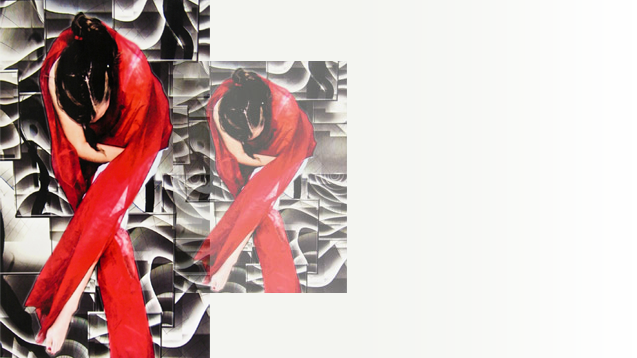

-
FCI - Programs
Our Mission:
- To address health issues that improve the lives of the underserved through collaboration, outreach and education.
- To make a significant difference in education and information about HIV and HCV prevention and care.
-
A Vision of Thoughtful Change
A Think Tank Experience
Think Tanks have been developed in partnership with the AIDS community leadership and municipal governmental entities responsible for service delivery and funding. Local leaders and critical thinkers in HIV services, policy, advocacy and general health and community services have participated.
Find Out More -

Don't Turn Your Back On AIDS
"Don’t Turn Your Back on AIDS" is an HIV/AIDS awareness art competition. In an interactive environment, high school students learn imperative information regarding HIV risks and prevention. Students creatively interpret their views and artistically express themselves under their art teachers’ instruction.
Find Out More